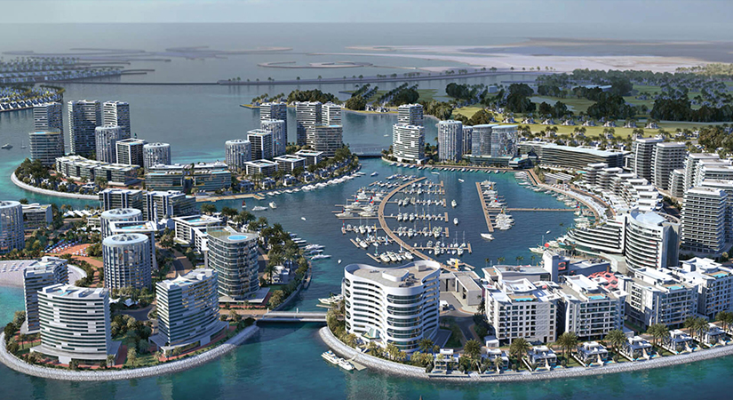

Palm Jumeirah
Esta isla es parte de un conjunto de islas artificiales en forma de palmera que aún está en construcción llamado 'Islas Palm'. Palm Jumeirah es vecina de The World y es considerada una de las islas artificiales más grandes jamás construidas. Después de la Gran Muralla China, es la segunda estructura construída por los humanos que es visible desde el espacio.

Durrat Al Bahrain
Este archipiélago todavía en construcción en la costa de Baréin cuenta con 15 islas artificiales conectadas. Está compuesto por atolones e islas en forma de peces y medialunas.Una vez finalizado, Durrat Al Bahrain tendrá capacidad para albergar 60.000 residentes y recibir hasta 4.500 visitantes diarios.
Port Island
Tomó 15 años construirla, las obras comenzaron en 1966 y la isla se inauguró en 1981. Está ubicada frente al puerto de Kobe, en Chuo-ku, Japón. Actualmente viven cerca de 15.000 personas en la isla. Además cuenta con varios hoteles, atracciones turísticas y comerciales, y parques.
The Venetian Islands
Las islas Venetian son una cadena de seis islas artificiales construidas alrededor de la Venetian Causeway, que une el centro de Miami con Miami Beach. Cinco de ellas están habitadas, siendo los de los barrios más prestigiosos y exclusivos para vivir. La sexta isla está reservada únicamente como zona de camping.
World Islands
Las World Islands están ubicadas a unos 4km de la costa de Dubai. Fueron construidas con 321 millones de metros cúbicos de arena y 31 millones de toneladas de piedra. Lo particular de éstas islas es que pretenden representar un mapa del mundo, vistas desde lo alto.
Aeropuerto Internacional de Kansai, Japón
En 1987 comenzaron las obras para construir el aeropuerto internacional de Kansai en una isla artificial, porque el crecimiento de la ciudad era tal que dificultaba el funcionamiento del aeropuerto. Las operaciones del aeropuerto se habilitaron en septiembre de 1994.